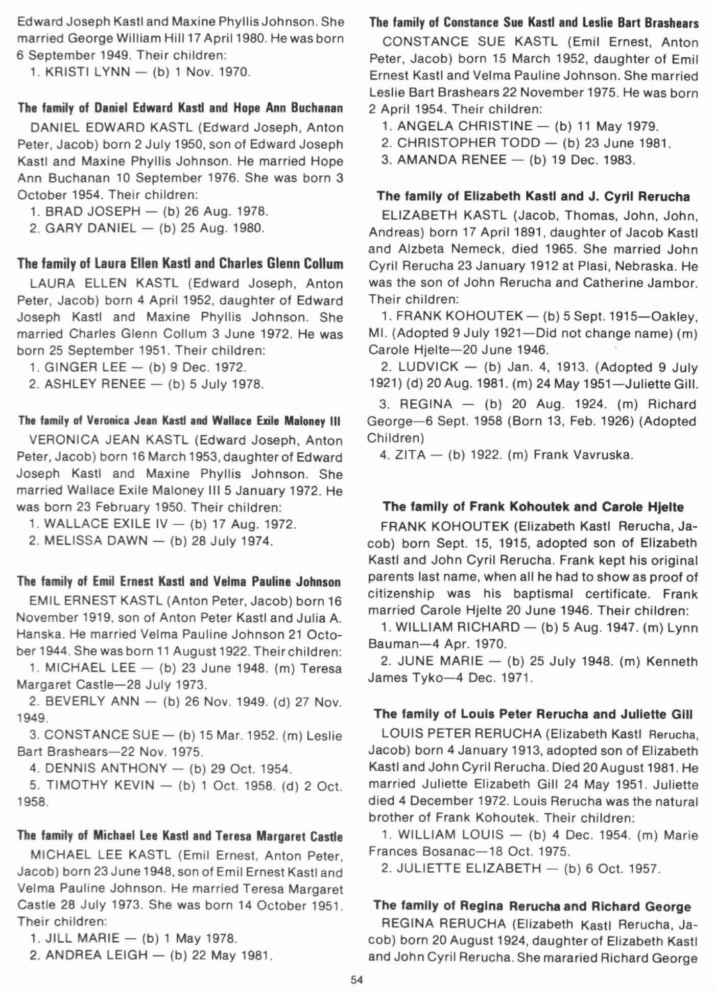

The book · The Family of Jacob Kastl
Page 54 The family of Daniel Edward Kastl and Hope Ann Buchanan


Transcription
Edward Joseph Kastl and Maxine Phyllis Johnson. She married George William Hill 17 April 1980. He was born 6 September 1949. Their children:
- KRISTI LYNN — (b) 1 Nov. 1970.
The family of Daniel Edward Kastl and Hope Ann Buchanan
DANIEL EDWARD KASTL (Edward Joseph, Anton Peter, Jacob) born 2 July 1950, son of Edward Joseph Kastl and Maxine Phyllis Johnson. He married Hope Ann Buchanan 10 September 1976. She was born 3 October 1954. Their children:
- BRAD JOSEPH — (b) 26 Aug. 1978.
- GARY DANIEL — (b) 25 Aug. 1980.
The family of Laura Ellen Kastl and Charles Glenn Collum
LAURA ELLEN KASTL (Edward Joseph, Anton Peter, Jacob) born 4 April 1952, daughter of Edward Joseph Kastl and Maxine Phyllis Johnson. She married Charles Glenn Collum 3 June 1972. He was born 25 September 1951. Their children:
- GINGER LEE — (b) 9 Dec. 1972.
- ASHLEY RENEE — (b) 5 July 1978.
The family of Veronica Jean Kastl and Wallace Exile Maloney III
VERONICA JEAN KASTL (Edward Joseph, Anton Peter, Jacob) born 16 March 1953, daughter of Edward Joseph Kastl and Maxine Phyllis Johnson. She married Wallace Exile Maloney III 5 January 1972. He was born 23 February 1950. Their children:
- WALLACE EXILE IV — (b) 17 Aug. 1972.
- MELISSA DAWN — (b) 28 July 1974.
The family of Emil Ernest Kastl and Velma Pauline Johnson
EMIL ERNEST KASTL (Anton Peter, Jacob) born 16 November 1919, son of Anton Peter Kastl and Julia A. Hanska. He married Velma Pauline Johnson 21 October 1944. She was born 11 August 1922. Their children:
- MICHAEL LEE — (b) 23 June 1948. (m) Teresa Margaret Castle—28 July 1973.
- BEVERLY ANN — (b) 26 Nov. 1949. (d) 27 Nov. 1949.
- CONSTANCE SUE — (b) 15 Mar. 1952. (m) Leslie Bart Brashears—22 Nov. 1975.
- DENNIS ANTHONY — (b) 29 Oct. 1954.
- TIMOTHY KEVIN — (b) 1 Oct. 1958. (d) 2 Oct. 1958.
The family of Michael Lee Kastl and Teresa Margaret Castle
MICHAEL LEE KASTL (Emil Ernest, Anton Peter, Jacob) born 23 June 1948, son of Emil Ernest Kastl and Velma Pauline Johnson. He married Teresa Margaret Castle 28 July 1973. She was born 14 October 1951. Their children:
- JILL MARIE — (b) 1 May 1978.
- ANDREA LEIGH — (b) 22 May 1981.
The family of Constance Sue Kastl and Leslie Bart Brashears
CONSTANCE SUE KASTL (Emil Ernest, Anton Peter, Jacob) born 15 March 1952, daughter of Emil Ernest Kastl and Velma Pauline Johnson. She married Leslie Bart Brashears 22 November 1975. He was born 2 April 1954. Their children:
- ANGELA CHRISTINE — (b) 11 May 1979.
- CHRISTOPHER TODD — (b) 23 June 1981.
- AMANDA RENEE — (b) 19 Dec. 1983.
The family of Elizabeth Kastl and J. Cyril Rerucha
ELIZABETH KASTL (Jacob, Thomas, John, John, Andreas) born 17 April 1891, daughter of Jacob Kastl and Alzbeta Nemeck, died 1965. She married John Cyril Rerucha 23 January 1912 at Plasi, Nebraska. He was the son of John Rerucha and Catherine Jambor. Their children:
- FRANK KOHOUTEK — (b) 5 Sept. 1915—Oakley, MI. (Adopted 9 July 1921—Did not change name) (m) Carole Hjelte—20 June 1946.
- LUDVICK — (b) Jan. 4, 1913. (Adopted 9 July 1921) (d) 20 Aug. 1981. (m) 24 May 1951—Juliette Gill.
- REGINA — (b) 20 Aug. 1924. (m) Richard George—6 Sept. 1958 (Born 13, Feb. 1926) (Adopted Children)
- ZITA — (b) 1922. (m) Frank Vavruska.
The family of Frank Kohoutek and Carole Hjelte
FRANK KOHOUTEK (Elizabeth Kastl Rerucha, Jacob) born Sept. 15, 1915, adopted son of Elizabeth Kastl and John Cyril Rerucha. Frank kept his original parents last name, when all he had to show as proof of citizenship was his baptismal certificate. Frank married Carole Hjelte 20 June 1946. Their children:
- WILLIAM RICHARD — (b) 5 Aug. 1947. (m) Lynn Bauman—4 Apr. 1970.
- JUNE MARIE — (b) 25 July 1948. (m) Kenneth James Tyko—4 Dec. 1971.
The family of Louis Peter Rerucha and Juliette Gill
LOUIS PETER RERUCHA (Elizabeth Kastl Rerucha, Jacob) born 4 January 1913, adopted son of Elizabeth Kastl and John Cyril Rerucha. Died 20 August 1981. He married Juliette Elizabeth Gill 24 May 1951. Juliette died 4 December 1972. Louis Rerucha was the natural brother of Frank Kohoutek. Their children:
- WILLIAM LOUIS — (b) 4 Dec. 1954. (m) Marie Frances Bosanac—18 Oct. 1975.
- JULIETTE ELIZABETH — (b) 6 Oct. 1957.
The family of Regina Rerucha and Richard George
REGINA RERUCHA (Elizabeth Kastl Rerucha, Jacob) born 20 August 1924, daughter of Elizabeth Kastl and John Cyril Rerucha. She mararied [sic] Richard George
People from the line of descent on this page
- Elizabeth Kastl 1891–1965/1968
- Emil Ernest Kastl b. 1919
- Martha Elizabeth Kastl b. 1949
- Daniel Edward Kastl b. 1950
- Laura Ellen Kastl b. 1952
- Veronica Jean Kastl b. 1953
- George William Hill b. 1949
- Kristi Lynn Hill b. 1970
- Hope Ann Buchanan b. 1954
- Brad Joseph Kastl b. 1978
- Gary Daniel Kastl b. 1980
- Charles Glenn Collum b. 1951
- Ginger Lee Collum b. 1972
- Ashley Renee Collum b. 1978
- Wallace Exile Maloney III b. 1950
- Wallace Exile Maloney IV b. 1972
- Melissa Dawn Maloney b. 1974
- Velma Pauline Johnson b. 1922
- Michael Lee Kastl b. 1948
- Beverly Ann Kastl 1949–1949
- Constance Sue Kastl b. 1952
- Dennis Anthony Kastl b. 1954
- Timothy Kevin Kastl 1958–1958
- Teresa Margaret Castle b. 1951
- Jill Marie Kastl b. 1978
- Andrea Leigh Kastl b. 1981
- Leslie Bart Brashears b. 1954
- Angela Christine Brashears b. 1979
- Christopher Todd Brashears b. 1981
- Amanda Renee Brashears b. 1983
- John Cyril Rerucha
- Frank Kohoutek b. 1915
- Louis Peter Rerucha 1913–1981
- Regina Rerucha b. 1924
- Zita Rerucha b. 1922
- William Richard Kohoutek b. 1947
- Jane Marie Kohoutek b. 1948
- Kenneth James Tyk
- Juliette Elizabeth Gill d. 1972
- William Louis Rerucha b. 1954
- Juliette Elizabeth Rerucha b. 1957
- Richard George b. 1926
Transcriber’s notes
Page opens mid-sentence continuing the Martha Elizabeth Kastl and George W. Hill entry from p.53. Martha's marriage is printed here as '17 April 1980' whereas p.53 child list gives '17 Apr. 1970' (and daughter Kristi Lynn b. 1 Nov. 1970); transcribed as printed. Child 2 of Elizabeth Kastl is 'LUDVICK' in the list but 'LOUIS PETER RERUCHA' in his own family heading; 'Jan. 4, 1913' and 'Sept. 15, 1915' use month-first order as printed. '(Born 13, Feb. 1926)' with comma as printed. 'mararied' typo as printed. Page ends mid-sentence in the Regina Rerucha entry ('She mararied Richard George'), continued on next page.